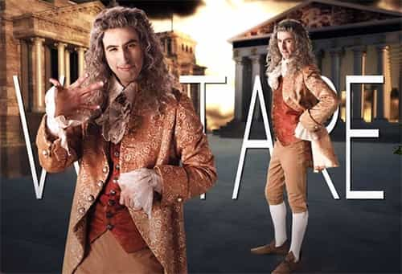

André is a young European who left his decaying country in 2012 for greener pastures. He enjoys exploring subterranean places, reading about a host of interconnected topics, and yearns for Tradition.


The existence of intellectuals is more ubiquitous today than ever. Many are those who contend for public attention, credibility, and money as a reward for their wits, not to mention the very status of intellectual. Yet the existence of such people is far from self-evident. For centuries, traditional societies barely had anything or anybody that looked like modern intellectuals, and this did not prevent them from lasting hundreds or even thousands of years.
So, as we elaborate projects and ideas for reforming the depraved societies of the Empire of Nothing—a necessary step if we want a lasting victory—an important question must be confronted: do we need at all what has been called “intellectuals” during last centuries? And if we do not, what should we have instead?
At the heart of modernity lies a deep crisis. Before it, Western Europe was united by the same Christian faith and a basic agreement on the place of economy—subordinated to guilds and the rights of the average producer.
When modernity reared its philosophical head through René Descartes, a prominent thinker of the seventeenth century, the Old Continent was in a much more problematic state: Christianity had splintered into various opposing faiths whose intellectual opposition was shaking everything to the core. We have been told that the seventeenth and eighteenth centuries were a glorious new flourishing of intelligence. But, in fact, thinkers who actually lived at this time had quite a different impression.
The Irish bishop George Berkeley (1685-1753) criticized how the practice of philosophy had become, on his age, synonymous with getting embroiled into “thousand scruples… prejudices and errors of sense,” a situation he attributed to “the wrong use we make of our faculties.” Likewise, the Scottish philosopher David Hume (1711-1776) scolded his contemporaries for being too eager to criticize the “systems” of others for the sake of pushing their own on the scene, that is, a mutual hypercriticism that led to a general lack of certitude about everything:
There is nothing which is not the subject of debate, and in which men of learning are not of contrary opinions. The most trivial question escapes not our controversy, and in the most momentous we are not able to give any certain decision. Disputes are multiplied, as if everything was uncertain; and these disputes are managed with the greatest warmth, as if everything was certain. Amidst all this bustle it is not reason, which carries the prize, but eloquence… From hence in my opinion arises that common prejudice against metaphysical reasonings of all kinds.
The first precursors were honest in their endeavour to solve the crisis. Descartes, Berkeley, Hume and many others genuinely sought a grand encompassing theory that could resume with all controversies. But soon the very controversy became an institution. A whole market of ideas was growing, in which more and more lettrés started to see an opportunity to make a name, thus earning fame, social standing and sometimes money. Hume could not help himself: soon after criticizing those who fed the crisis by attacking the others’ “systems” while promoting their own, he was doing the same.
Such was the so-called Enlightenment: the further undermining of any spiritual, philosophical or cultural unity by ambitious individuals ready to hustle for notoriety. They would be experts at flattering the powerful, mocking the Catholic church, fiddle fashionable themes and “witty” prose, and more than everything else rationalizing their activity as a “progress.” The very expression “Enlightenment” stems from their willingness to market themselves to the posterity.
It can be noted that, from the amateur gentlemen of the eighteenth century, generations of scientists have sprang up. Some of these characters were mathematicians, engineers, doctors, or dedicated observers of nature, and they all contributed to improving general human power over matter. But make no mistake: even science needs problems and unknown stuff to justify careers and research, thus following a headlong rush dynamic. At its side, the literary intellectuals need more problems so they can have the opportunity to sell themselves through claiming they want to solve them.
The momentous crisis turned into a crisis structure and the structure turned into a mark of the modern West. Where God ceased to speak, the modern talking head took more and more territory and wrote dozens of books trying to prove he was the embodiment of progress. It doesn’t matter if problems are genuine or artificial. Intellectuals need them like a blacksmith needs iron.
Two typical intellectual characters are Voltaire and Émile Zola. Both were gifted writers, both were charming and witty, both managed to write about matters that were actually relevant to their times, and both have used a trial with political overtones to make a show of themselves. (Not so incidentally, both were French and participated to the furthering of a twisted literary chauvinism.)

Voltaire took advantage of various trials to claim that the defendants were accused because they were Protestants inside a Catholic country. The infamous affaire Calas, from the name of a father who was accused of having murdered his own son, was used by the shrewd philosophe to sending pathetic letters to the upper crust of the society, stirring the public opinion, pressuring magistrates, until the father—who had been convicted and executed after a thorough investigation—was rehabilitated. Two centuries and a half later, young Frenchmen are still taught Voltaire was a champion of truth, justice, and reason, whereas he was more like a playwright who peddled influence.
Zola, more than a century later, did the same. A Jewish-French captain, Alfred Dreyfus, was convicted for high treason after he allegedly communicated secret documents to Prussia. Years later, some new evidence seemed to indicate that Dreyfus was innocent and that another officer had leaked the documents: at this very moment, Zola published an incendiary article, J’accuse, where he spat on the judges and cried about the injustice of the affaire. Eventually, Dreyfus was rehabilitated—and the army, the patriots and the Catholics were shamed through a never-ending media discourse that casted them as villains of the whole story.
Voltaire and Zola played the same role in a narrative of the exact same kind. We are taught about a situation of injustice, where the majority of the population is oppressing an innocent group through an innocent individual and crooked institutions. Fortunately, a heroic talking head rises, miraculously converts the opinion to recognize the poor innocent victim as such, the talking head is crowned as an awesome thinker beyond boundaries whereas some are fairly vilified as “oppressors,” and the poor victim’s rehabilitation is also the victory of reason, justice, and progress.
Thus, the intellectuel in the most typical sense is a highly paradoxical creature who becomes taught in classes after having seemingly rebelled against dominant institutions. Teenagers are led to think that heroic and highly intelligent individuals can turn the tide of unfavourable opinion… provided they follow a mysterious sense of history. There have been a lot more intellectuals than the mere classics, and often those rejected by the official narrative are more interesting than those inside.
Even if you are gifted with words and language, being a talking head does not pay much. Would anyone be ready to pay you for giving an opinion, no matter how elaborate, on anything? The problem of money is a good starting point to connect the dots: Voltaire was close from wealthy Protestants bankers, one of whom even helped him to obtain a house in Geneva, and Zola was a Rotschild protégé. Both of them contributed to tarnish Catholicism and most of their own people. In other words, they served interests that could pay them—they were sellouts.
Today, some bloggers happen to earn money as independents, especially when they found themselves a niche. Yet independence is scarce. Way too many people would like to live from their wits, and, even more, obtain recognition as intellectuals. More than often, intellectual types turn into teachers, journalists, or even marketers—thus depending upon an institution that pays them.
In North America, the war against whites and masculinity is massively subsidized, whether in the academic or in the media. You won’t easily find a job there if you take a critical stance on cultural Marxism. And in case you wouldn’t be self-hating enough, they are already replacing you with “minority” individuals who are rewarded for spewing wordy venom daily.

Old Marxism was well-aligned with the interests of intellectuals as a class, not as individuals. It handed them an official status and flattered their ego by casting them as the vanguard of “progress.” Keynesianism triumphed for the exact same reason as it justified the creation of a bloated State where model-obsessed nerds enjoy a tremendous power over those who produce actual wealth. Intellectual types historically joined the left because it gave them a status, money, and moral recognition.
But the whole Marxist vocabulary of “progress” and “emancipation” dissimulated what seems glaring today. Namely, that intellectuals were recognized and paid, not because they were enlightened or bright, but because they were an efficient tool of destruction.
The conservative right has often lacked a milieu for intellectual types. The average conservative was reluctant to pay someone he saw as a parasite. Such a lack pushed a number of high IQs to the arms of the left, who made an establishment out of them and paid them to enforce globalism, anti-whiteness, anti-masculinity, pathological altruism, transgender madness, “politically correct” repression and so on. Intellectuals were never paid to say the truth: they were paid as tools who performed a primarily destructive social function.
If we happen to beat cultural Marxism, what shall we do with intellectual types? If we are to dismantle globalism and build healthier societies, we have to think about what we will replace the bobo-leftist establishment. The intellectual mediocrity and spinelessness of the average conservative is no solution. A truly traditional society would likely have initiates, something akin to high priests and knights, in lieu of vacuous and coward talkers. How exactly we go there or how exactly this could look today is another question.
The French essayist Alain Soral once famously said, “a journalist is either a whore or without a job.” This is even truer for most intellectuals, sold as they are to a destructive left or (more seldomly) to the inefficient right.
Culture is overrated. What the mainstream refers to under that name is a giant matrix, full of lies, taboos, and the snobbery of talking heads who end up lying to everyone or believing into their own bullshit. No wonder why the shrewd Robert Greene advised to be an “intense realist”: one must cultivate inner intuition and situational awareness not to fall prey to some of the claptrap that constitutes at least eighty per cent of current mainstream “culture.”
The previous generations could join the cultural Marxist establishment and pretend their destructive, ego-laden works were progress. To our generation, this is impossible. Either we stand up for our very existence, even if we must go against more than two centuries of manipulations and lies, or we resign ourselves to an ignominious death. Before we take the power back, a shared awareness must be stimulated, and this is where we enter in direct conflict with the well-funded anti-white, anti-masculine establishment types, whom we must beat on their own field once and for all.
Some of the problems that modern philosophical thinking puts forward appear void of any importance and meaning. [Modern philosophy] features a range of issues that merely stem from an equivocal stance and the confusion of different viewpoints. These issues only exist because they are poorly framed. They have no fundamental reason to exist. In many cases, defining their statements more precisely may be enough to make them disappear, plain and simple, if [modern] philosophy did not strive to maintain them, because it makes a living out of ambiguity.
— René Guénon, Introduction to the study of the Hindu doctrines, chap.8.
René Guénon (young)
Philosophers care much more about putting forth problems, no matter how artificial and illusory, than about solving them… They also strive to link their name to a ‘system,’ that is, to a strictly bounded set of theories they would own and consider as nothing more than their own work. Hence the desire to be original at any price, even if the truth must be sacrificed on the altar of said originality. A philosopher who cares about his repute does better by making up a new mistake than by repeating some truth that has already been expressed by others.
—René Guénon, The Crisis of the Modern World, chap.5.
René Guénon (older)
The most evident feature of [modern] critique is the lack of principles and of authenticity. Its greater preoccupation consists in being brilliant, in appearing original… From the point of view of those who embody this ‘intellectuality,’ the catchy line, the dialectical or polemical posturing well noticed by others, have a much greater value than truth. Ideas, when they use them, are nothing but a pretext. What matters is to look intelligent—just as, to the mainstream politician, the ideology of a party is essentially a means for career. The ‘vanity fair,’ the most deleterious subjectivism, often verging on pure and unmitigated narcissism, are essential components of this phenomenon… The ‘critique’ is a scourge of modern culture, an epidemic that was born out of bourgeois society concomitantly with the commodification of culture… In normal, traditional civilizations, one could find creators, artists, and those who would judge the works without intermediaries: the sovereigns, the patrons, and the people. Our times have witnessed the appearance, between the public and the creators, of that cultural pimp, that cheeky and presumptuous parasite we call a ‘critique.’
— Julius Evola, The Bow and the Club
Baron Giulio Cesare Evola
Show me more venal, more insensitive, more corrupt minds than those of the literate caste! How many of them do you know whose virtue would still be uncorrupted? Who, but them, for over thirty years, kept flooding us with a loosened morale, a disdain for work, a disgust of duty, a disrespect for family, who but the literary? Who dipped into secret funds more shamelessly than they did? Who seduced women, softened the young, excited the nation to more debauchery than they did? Who did abandon cowardly the princes after begging for their favours…? So-called men of letters, always! They run like harlots between the legitimate government and usurpers, between monarchy and republic, between politics and socialism, between atheism and religion. Everything is good to them as long as they can make a profit and be fashionable out of it.
— Pierre-Joseph Proudhon (quoted by the following one)
Pierre-Joseph Proudon
Compare, for example, seventeenth century writers with those of the eighteenth. What a difference in tone and gait! The former, under a veneer of servility, have the most noble and proud stance… They do not pretend to reign. They merely stand at their place, recognize the place of a superior power beyond, give themselves completely to their writing task, dismiss the temptation of advertising and demonstrate their professional dedication. On the other hand, look at the Voltaire, Diderot and the like: they open well the era of intellectuals, writing stooges as they are, courtiers of princes they flatter and despise at the same time—something they are forced to do as they want to usurp their power… Their courtier nature reveals in everything they do… The whole eighteenth century, both spiritual and plain on a scoundrel background, is libertine, and already pornographic: such is the start of literary mercantilism; people of letters make money out of their writings, pretend to financial independence, and they write garbage to flatter the opinion of their public.
— Édouard Berth, Les méfaits des intellectuels (“the misdeeds of the intellectuals”), Introduction
Édouard Berth (disciple of Proudhon)
I have had the same experience with journalists citing each other about my books without the smallest effort to go to my writings—my experience is that most journalists, professional academics, and other in similar phony professions don’t read original sources, but each other, largely because they need to figure out the consensus before making a pronouncement.
— Nassim Taleb, Antifragile, chap.23.
Nassim Taleb
Read Next: How Social Justice Warriors Have Been Infecting Science For Half A Century